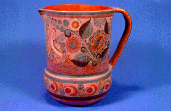

JARRA

Descripción:
Vasija compuesta, base plana, cuerpo globular, cuello recto, boca ancha, asa vertical.
Procedencia de la pieza:
Tonalá, Edo. Jalisco, México
Materiales:
Arcilla y pintura
Técnica:
Moldeado, pintado y bruñido
Función:
Decorativo